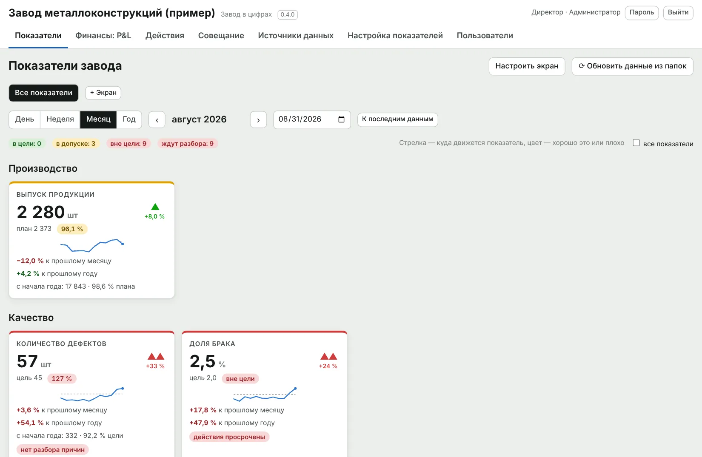

Отклонение от плана должно заканчиваться действием
Условные данные. Ролики идут подряд.
Две программы и комплекты документов для управления заводом: показывают, где завод отстаёт от цели, и ведут каждое отклонение до причины, ответственного и результата.
- 1. ПоказательДоля бракаавгуст, цех формовки
- 2. Цель2,0%допуск до 2,3%
- 3. Отклонение3,4%вне цели на 1,4 п. п.
- 4. ПричинаТрещины58% брака, после смены режима
- 5. ДействиеДо 12.09главный технолог: вернуть режим, проверить датчики
- 6. Результат2,1%сентябрь: помогло, причина не повторилась
Условный пример. Так выглядит разбор одного показателя в программе «Завод в цифрах».
ИИ-ассистент аналитика — новое в версии 0.5.6
Директор выбирает период и показатели, ассистент пишет текст отчёта для планёрки. Числа считает программа, модель только описывает готовую таблицу, решение остаётся за человеком.
- Отчёт по P&L и оценка рисков — по просьбе директора своими словами
- Числа в тексте, которых нет в таблице программы, подсвечиваются как возможная выдумка
- Видно, что именно ушло в модель; по умолчанию ассистент выключен
Программа для Windows и Mac, версия 0.5.6
Завод в цифрах
Производство, качество, деньги и люди на одном экране и в одной логике. Программа читает файлы Excel завода как есть: план-факт, журналы ОТК и простоев, бюджет, кадровый файл.
- Показатели с целью, допуском и трендом: за день, неделю, месяц, год
- По показателю вне цели — три главные причины, действие, ответственный и срок
- P&L по месяцам: факт к бюджету, EBITDA, чистая прибыль
- Персонал: численность, текучесть, выработка, доля ФОТ в выручке
- ИИ-ассистент: текст отчёта для планёрки, числа считает программа

Программа для Windows и Mac, версия 3.3
План-факт
Ежедневный контроль выполнения плана. Мастер вносит факт по сменам, ОТК — брак, оператор отмечает простой с телефона. Утренняя планёрка идёт по экрану программы, решения сразу становятся задачами со сроком.
- План месяца по дням с утверждением; после утверждения изменения только с причиной
- Заказы и готовность к отгрузке: какой заказ под угрозой, видно до срыва срока
- Качество (ОТК), простои по QR-коду, хронометраж операций
- Работает в сети завода без облака; сотрудники заходят через браузер

Word, Excel и PDF для печати
Документы завода
Комплект из более чем 100 связанных документов, по которым завод работает с первого дня: технологические карты, инструкции ОТК, регламенты управления, аудит действующего завода и план ввода на 12 месяцев.
Готовы два комплекта: для завода железобетонных изделий и для производства водонагревателей.

Данные остаются на заводе
Программы ставятся на компьютер предприятия и работают в локальной сети. Облака и чужого сервера нет.
Excel переделывать не нужно
«Завод в цифрах» сам распознаёт раскладку файла и показывает, что взял, а что пропустил.
Без долгого ИТ-проекта
Настройка показателей, экранов и прав делается в самой программе, без программиста.
Скачать
Презентация и шесть документов из комплектов целиком, без регистрации. По ним видно, как документы устроены и насколько подробны.
Программы
- Презентация Plant PerformancePDF, 9 слайдов: обе программы и комплекты документовСкачать PDF
- Ролик «Завод в цифрах»MP4, 50 секунд, титры на экранеСкачать MP4
- Ролик «ИИ-ассистент: P&L и риски»MP4, 51 секунда, условные данныеСкачать MP4
- Ролик «ИИ-ассистент: отчёт для директора»MP4, 93 секунды, условные данныеСкачать MP4
Документы: завод ЖБИ
- Технологическая карта ТК-ТВО-01Тепловлажностная обработка изделий в камерах · PDF, 5 страницСкачать PDF
- Инструкция ОТК ИК-ОК-03Контроль прочности бетона · PDFСкачать PDF
- Чек-листы операторов на сменуФормы для печати A4 · PDFСкачать PDF
Документы: завод водонагревателей
- Технологическая карта ТК-ЭМ-02Обжиг эмали · PDF, 5 страницСкачать PDF
- Инструкция ОТК ИК-ОК-03Контроль эмалевого покрытия · PDFСкачать PDF
- Доски участковПлан и факт по часам, формы для печати A3 · PDFСкачать PDF
Напишите нам
Расскажите в двух строках, что за завод и что хотите посмотреть. Ответим, покажем программу в работе и пришлём документы, которых нет на сайте.
info@plantperformance.ru